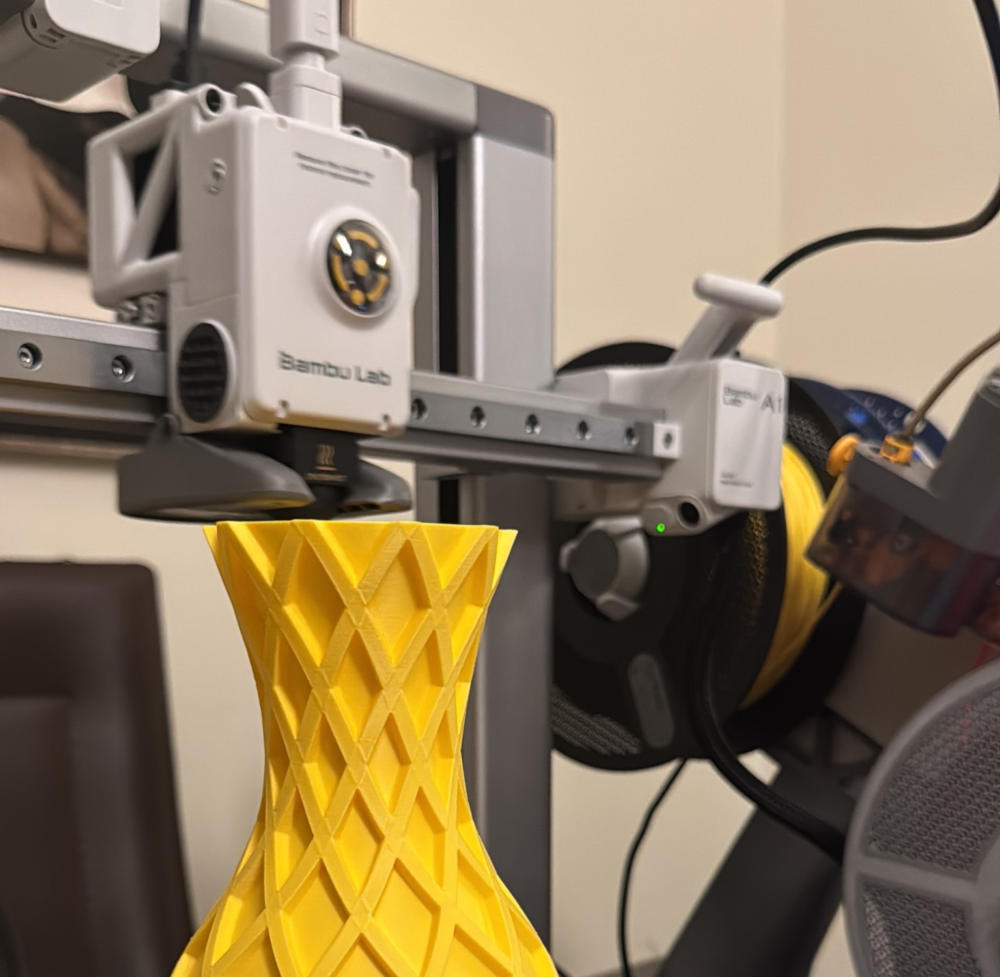
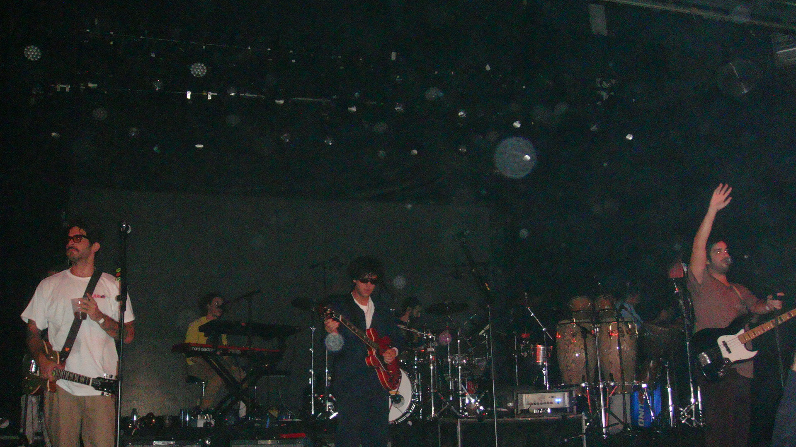
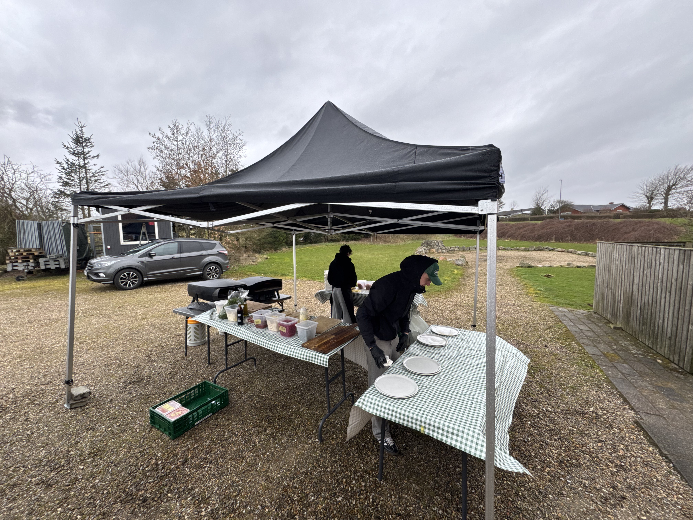
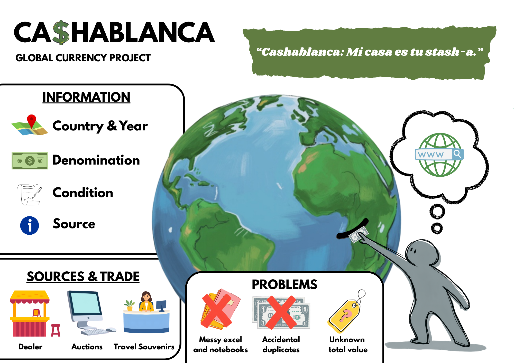

Designed and fabricated custom PETG souvenir components and display models supplied to local stores in Segovia, Spain.
Technologies Used: 3D CAD Modeling, Slicing Software, PETG Fabrication, Retail Packaging
View Gallery Assets
Captured live music performances and cultural events, focusing on stage lighting, candidate framing, and high-contrast color grading.
Technologies Used: Digital SLR Photography, Photo Editing, Color Correction
View Full Resolution ImageA multi-page responsive web project designed and built to showcase my education, work history, and creative projects as part of my WEB1 course.
Technologies Used: Semantic HTML5, External CSS3, Flexbox, CSS Grid, GitHub Pages
View Live Website
Coordinated mobile kitchen and food truck catering operations during high-volume public events, balancing fast-paced food preparation with on-site customer service and logistics.
Technologies Used: POS Systems, Event Logistics, Kitchen Workflow Optimization, Food Safety Standards
View Event Gallery Photo
My first semester software project focused on domain modeling, user activity mapping, and application design for organizing and cataloging bill collections.
Technologies Used: Software Architecture, Domain Modeling, UML, HTML/CSS